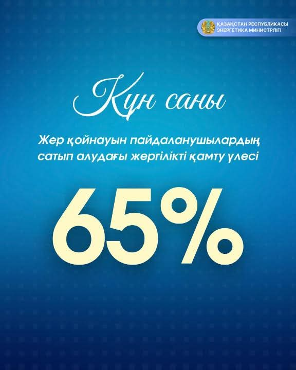

Date: 14.03.2026

Бүгінгі таңда Қазақстанның жер қойнауын пайдалану саласында көмірсутектерді барлау мен өндіруге арналған 321 келісімшарт, сондай-ақ көмір өндіруге арналған 36 келісімшарт қолданыста.
Ресурстарды басқарудың тиімділігі 2025 жылғы аукциондардың қорытындысымен расталады. Олардың нәтижесі бойынша 1,2 млрд теңге қол қою бонусы сомасына және геологиялық барлауға бағытталған 45,5 млн АҚШ доллары көлеміндегі бастапқы инвестициясымен 6 жер қойнауы учаскесі іске асырылды.
Жергілікті қамтуды арттыруға ерекше көңіл бөлінуде: 2025 жылдың қорытындысы бойынша жер қойнауын пайдаланушылардың сатып алуларындағы ішінара елдік құндылық үлесі 65%-ға дейін өсті, бұл ақшалай баламада 3 трлн теңгені құрады. Салыстырмалы түрде айтсақ, 2024 жылы бұл көрсеткіш 61,9% болған еді.
Оқшаулауды одан әрі дамытудың айтарлықтай әлеуеті 19 тауар тобы бойынша анықталды, олар ірі операторлардың ұзақ мерзімді қажеттіліктерінің 80%-ын құрайды.
Осы стратегия аясында 2022-2025 жылдар аралығында халықаралық инвесторлармен 25 келісімге қол қойылды. Бұл Honeywell, PetrolValves, WIKA және Schlumberger сияқты брендтердің өнімдерін қоса алғанда, жоғары технологиялық жабдықтардың 9 өндірісін сәтті оқшаулауға мүмкіндік берді.
Сондай-ақ мұнай-газ саласында ең көп сұранысқа ие түпнұсқа тауарларды шығаратын келесі әлемдік өндірушілермен бірлесіп, жаңа өндірістерді оқшаулау бойынша жұмыстар жүргізілуде: Chemelex (АҚШ), John Crane (АҚШ), Hi Air Korea (Корея), Baker Hughes (АҚШ), KazWell Systems (Қазақстан/Бразилия), Terranova Srl (Италия), Swagelok (АҚШ), Slb (АҚШ), Siemens (Германия).